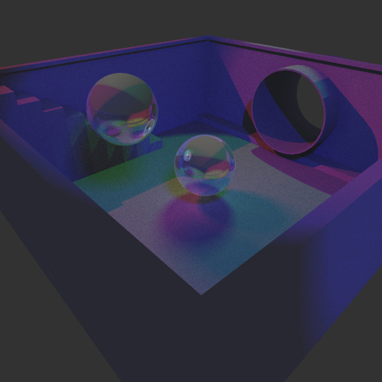
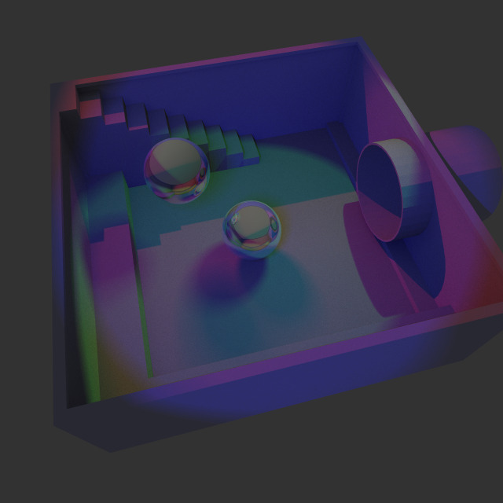

Gallery
Check out some of the renderings I've been working on, not everything is on GitHub quite yet.
but here I'll upload some of the works I'm proud of.
June 23rd, 2024
Rendered with just 64 rays per pixel.
Rendered with 2048 rays per pixel.
A couple images I've created with a homebrew Ray Tracer. This project was developed in C++ and CUDA.
Check out the full project on my github.
These images are some initial test renderings from my Master's thesis (still in progress).
The project seeks to render light caustics in dynamic liquid bodies using Ray Tracing.
This rendering is of a fountain that is spraying "liquid" represented by the particles from the center.
To date, the proper forces between particles needs to be updated and the surface needs to be constructed before
lighting effects can be calculated.
This image was rendered using ray tracing, with only one ray per pixel and a single shadow ray.
There are 3000 particles.
This was rendered in pure C++ for a graphics class. The model is the Stanford Bunny, while I applied a rose quartz texture and a brick normal mapping. This image was rendered using raster graphics and projective geometry without the use of a graphics library like OpenGL. It features specular, diffuse, and ambient lighting using Phong Shading.
This image was from another class project. Implemented in C++ using OpenGL and GLSL, buddha jumps on the sphere compressing it, and the dragon nearby slowly changes color.
This image resulted from a memory error when attempting to render some objects in OpenGL. This is the result of improperly loading data from .obj files into OpenGL's vertex attribute array.
This image is a frame from an animation, where the camera rotates around the large spheres and triangle. This image was rendered using Ray Tracing implemented in C++, and served as a test rendering for animations.
My very first good-looking rendering. This was produced after following Peter Shirley's Ray Tracing in One Weekend.